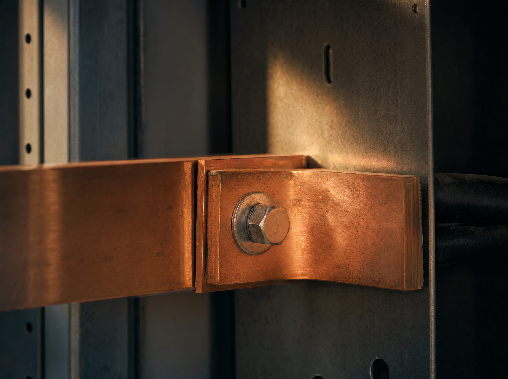
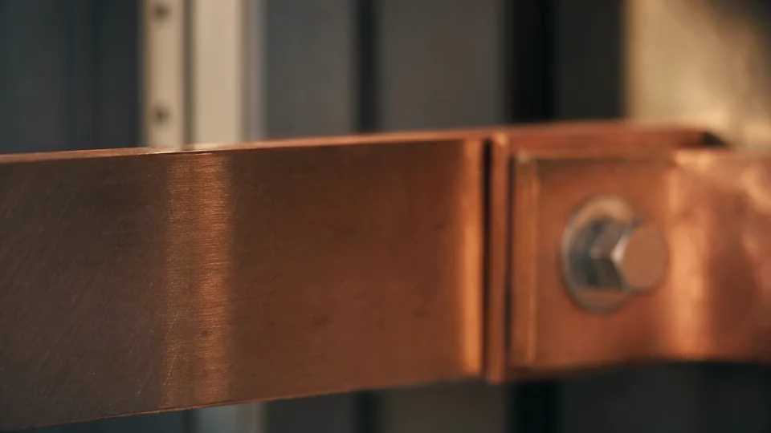
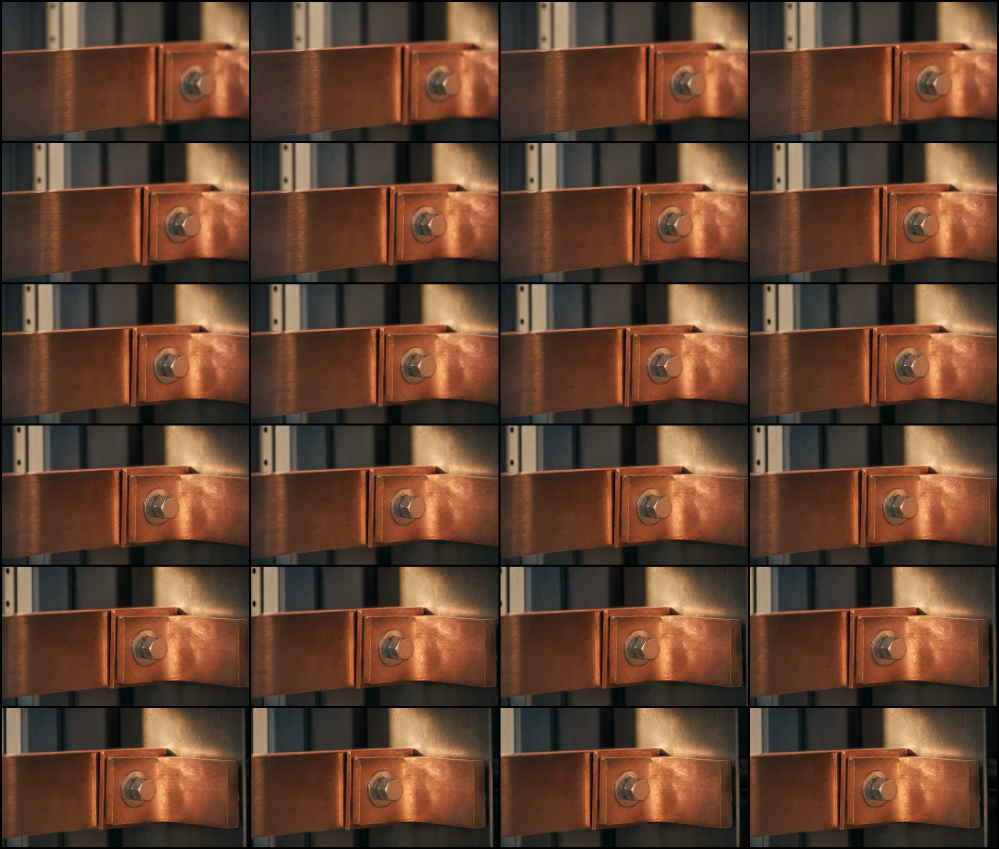
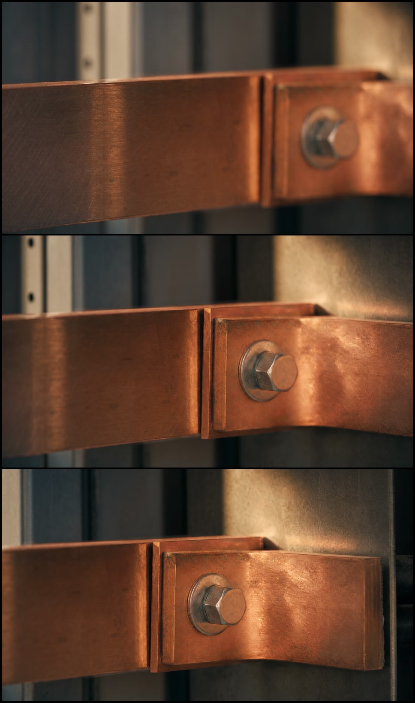

NIVAR / G2.3 / HARDWARE / ESTUDO ILUSTRATIVO
A interface física antes da medida.
Candidato recomendado para reprodução única, com replay explícito. A conexão permanece reconhecível e estável nos quadros inspecionados; o fim não coincide com o início. Não usar loop automático.
H.264 · 960 × 540 · 24 FPS · 6,042 S · 225.981 B · SEM ÁUDIO
Seedance 2.5 a partir da imagem de cobre do G2.1. O foco começa no grão à esquerda e alcança a junta e o parafuso. Não representa uma instalação real nem dados de desempenho.

Fonte existente · imagem 4:3, job de imagem 2a9dd2c3.
Primeiro quadro · reenquadramento 16:9; poster de runtime.Continuidade em 24 quadros
Leitura da esquerda para a direita, de cima para baixo: intervalos aproximados de 0,25 segundo. Parafuso, arruela, borda dupla e gabinete preservam continuidade nos quadros inspecionados.

0 s / 3 s / 6 s
A mudança de posição e foco explica por que o filme funciona melhor como uma única passagem, seguida de replay voluntário.

Observações e limites da inspeção · Procedência, comandos e SHA-256 · Original preservado